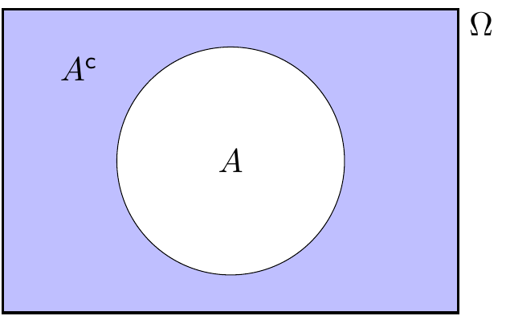
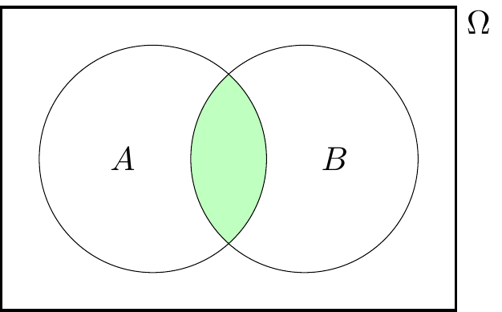
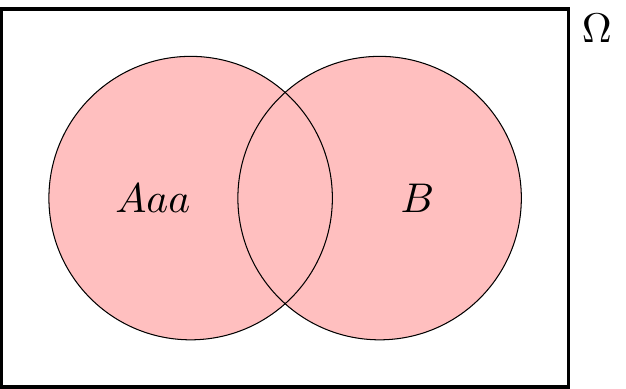
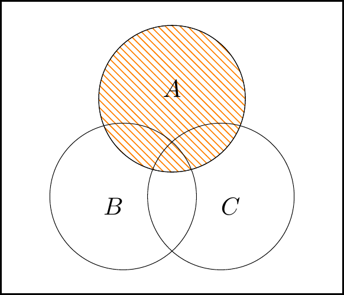
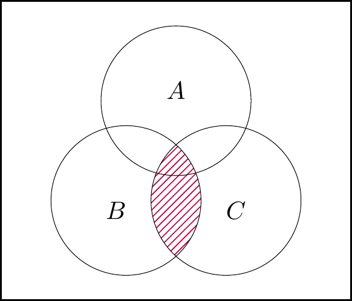
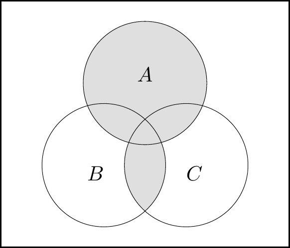
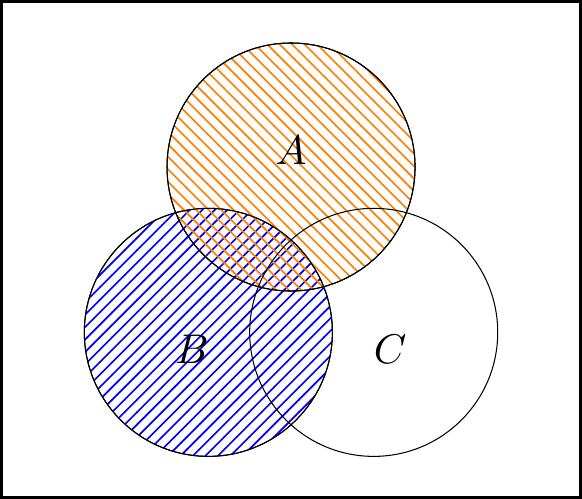
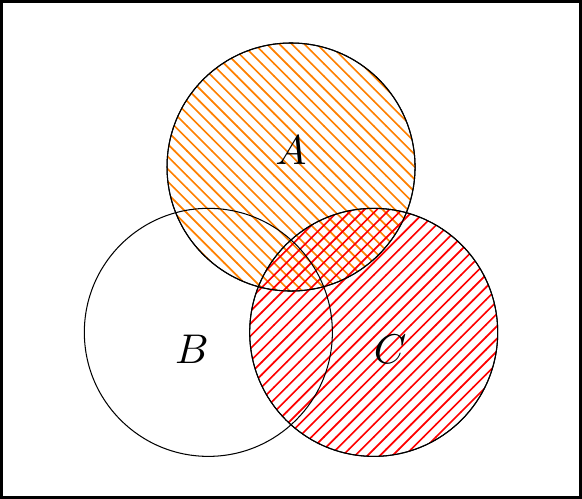

Lecture 3 Sample spaces and events
3.1 What is probability?
We now begin the big central block of this module, on probability theory.
Probability theory is the study of randomness. Probability, as an area of mathematics, is a fascinating subject in its own right. However, probability is particularly important due to its usefulness in applications – especially in statistics (the study of data), in finance, and in actuarial science (the study of insurance).
Probability is well suited to modelling situations that involve randomness, uncertainty, or unpredictability. If we you want to predict the time of the next solar eclipse, a deterministic (that is, non-random) model based on physical laws will tell you when the sun, the moon, and the earth will be in the correct positions; but if you want to predict the weather tomorrow, or the price of a share of Apple stock next month, or the results of an election next year, you will need a probabilistic model that takes into account the uncertainty in the outcome. A probabilistic model could tell you the most likely outcome, or a range of the most probable outcomes.
So what do we mean when we talk about the “probability” of an event occurring? You might say that the probability of an event is a measure of “how likely” it is to occur, or what the “chance” of it occurring is.
More concretely, here are some interpretations of probability:
- Subjective (or Bayesian) probability: The probability of an event is the way someone expresses their degree of belief that the event will occur, based on their own judgement, and given the evidence they have seen. Their belief is measured on a scale from 0 to 1, from probabilities near 0 meaning they believe the event is very unlikely to occur to probabilities near 1 meaning they believe the event is very likely to occur.
- This interpretation is philosophically sound, but a bit vague to be the basis for a mathematics module.
- Classical (or enumerative) probability: Suppose there are a finite number of equally likely outcomes. Then the probability of an event is the proportion of those outcomes that correspond to the event occurring. So when we say that a randomly dealt card has a probability \(\frac{1}{13}\) of being an ace, this is because there are 52 cards of which 4 are aces, so the proportion of favourable outcomes is \(\frac{4}{52} = \frac{1}{13}\).
- This interpretation is good for simple procedures like flipping a fair coin, rolling a dice, or dealing cards, where the “finite number of equally likely outcomes” assumption holds. But we want to be able to study more complicated situations, where some outcomes are more likely than others, or where infinitely many different outcomes are possible.
- Frequentist probability: In a repeated experiment, the probability of an event is its long-run frequency. That is, if we repeat an experiment a very large number of times, the probability of the event is (approximately) the proportion of the experiments in which the event occurs. So when we say a biased coin has probability 0.9 of landing heads, we mean that were we toss it 1000 times, we would expect to see very close to \(0.9 \times 1000 = 900\) heads.
- There are two problems with this. First, this doesn’t deal with events that can’t be repeated over and over again (like “What’s the probability that England win the 2022 World Cup?”). Second, to answer the question, “Yes, but how close to the probability should the proportion of occurrences be?”, you end up having to answer, “Well, it depends on the probability,” and you’ve got a circular definition.
- Mathematical probability: We have a function that assigns to each event a number between 0 and 1, called its probability, and that function has to obey certain mathematical rules, called “axioms”.
It will not surprise you to learn that, in this mathematics course, we will take the “mathematical probability” approach. However, we will also learn useful things about the other approaches: we will see that classical probability is one special case of mathematical probability; we will see a result called the “law of large numbers” that says that the long-run frequency does indeed get closer and closer to the mathematical probability; and a result called “Bayes’ theorem” will advise a subjectivist on how to update her subjective beliefs when she sees new evidence.
3.2 Sample spaces and events
Taking the “mathematical probability” approach, we will want to give a formal mathematical definition of the probability of an event. But even before that, we need to give a formal mathematical definition of an event itself. Our setup will be this:
- There is a set called the sample space, normally given the letter \(\Omega\) (upper-case Omega), which is the set of all possible outcomes.
- An element of the sample space \(\Omega\) is a sample outcome, sometimes given the letter \(\omega\) (lower-case omega), represents one of the possible outcomes.
- An event is a set of sample outcomes; that is, a subset of the sample space \(\Omega\). Events are often given letters like \(A\), \(B\), \(C\). We write \(A \subset \Omega\) to mean that \(A\) is an event in (or, equivalently, is a subset of) the sample space \(\Omega\).
This will be easier to understand with some concrete examples. We write a set (such as a sample space or an event) by writing all the elements of that set inside curly brackets \(\{\ \}\), separated by commas.
Example 3.1 Suppose we toss a (possibly biased) coin, and record whether it lands heads or tails. Then our sample space is \(\Omega = \{\mathrm H, \mathrm T\}\), where the sample outcome H denotes heads and the sample outcome T denotes tails.
The event that the coin lands heads is \(\{\mathrm H\}\).
Example 3.2 Suppose we roll a dice, and record the number rolled. Then our sample space is \(\Omega = \{1,2,3,4,5,6\}\), where the sample outcome \(1\) corresponds to rolling a one, and so on.
The event “we roll an even number” is \(\{2,4,6\}\). The event “we roll at least a five” is \(\{5,6\}\).
Example 3.3 Suppose we wish to count how many claims are made to an insurance company in a year. We could model this by taking the sample space \(\Omega\) to be \(\mathbb Z_+ = \{0, 1, 2, \dots\}\), the set of all non-negative integers.
The event “the company receives less than 1000 claims” is \(\{0, 1, 2, \dots, 998, 999\}\).
Example 3.4 Suppose we want a computer to pick a random number between 0 and 1. We could model this by taking the sample space \(\Omega\) to be the interval \([0, 1]\) of all real numbers between 0 and 1.
The event “the number is bigger than \(\frac12\)” is the sub-interval \((\frac12, 1]\) of all real numbers greater than \(\frac12\) but no bigger than 1. The event “the first digit is a 7” is the sub-interval \([0.7, 0.8)\). The event “the random number is exactly \(1/\sqrt{2}\)” is \(\{1/\sqrt{2}\}\).
In the first two examples, the sample space \(\Omega\) was finite. In third example, the sample space was infinite but “countably infinite”, in that it could be counted using the discrete values of the positive integers. Both of these were for counting discrete observations. In the fourth example, the sample space was infinite but “uncountably infinite”, in that it had a sliding scale or “continuum” of gradually varying measurements. This was for measuring continuous observations. This distinction will be important later in the course.
For any sample space \(\Omega\), there are two special events that always exist. There’s \(\Omega\) itself, the event containing all of the sample outcomes, which represents “something happens”. There’s also the empty set \(\varnothing\), which contains none of the sample outcomes, which represents “nothing happens”. Common sense suggests that \(\Omega\) should have probability 1, because something is bound to happen – this will later be one of our probability “axioms”. Common sense also suggests that \(\varnothing\) should have probability 0, because it can’t be that nothing happens – this will not be one probability axioms, but we’ll show that it follows logically from the axioms we do choose.
3.3 Set theory
Since we’ve now defined events as being sets – specifically, subsets of the sample space \(\Omega\) – it will be useful to mention a little set basic theory here.
First, there are ways we can build new sets (or events) out of old. It’s fine to just read the words and look at the pictures for these definitions, but those who want to read the equations too will need to know this:
- \(\omega \in A\) means “\(\omega\) is in \(A\)” or “\(\omega\) is an element of \(A\)”, while \(\omega \not\in A\) means the opposite, that \(\omega\) is not in \(A\);
- a colon \(:\) in the middle of set notation should be read as “such that”;
- so \(\{\omega \in \Omega : \text{fact about $\omega$}\}\) should be read as “the set of sample points \(\omega\) in the sample space \(\Omega\) such that the fact is true”.
Definition 3.1 Consider a sample space \(\Omega\), and let \(A\) and \(B\) be events in that sample space.
- NOT: The complement of \(A\), written \(A^\mathsf{c}\) (and said “\(A\) complement” or “not \(A\)”), is the set of sample points not in \(A\); that is \[ A^\mathsf{c}= \{\omega \in \Omega : \omega \not\in A \} . \] This represents the event that \(A\) does not occur.
- AND: The intersection of \(A\) and \(B\), written \(A \cap B\) (and said “\(A\) intersect \(B\)” or “\(A\) and \(B\)”) is the set of sample points in both \(A\) and \(B\); that is,
\[ A \cap B = \{\omega \in \Omega : \omega \in A \text{ and } \omega \in B \} . \] This represents the event that both \(A\) and \(B\) occur. - OR: The union of \(A\) and \(B\), written \(A \cup B\) (and said “\(A\) union \(B\)” or “\(A\) or \(B\)”) is the set of sample points in \(A\) or in \(B\); that is, \[ A \cup B = \{\omega \in \Omega : \omega \in A \text{ or } \omega \in B \} . \] This represents the event that \(A\) occurs or \(B\) occurs. (In mathematics, “or” includes “both”, so a sample outcome in both \(A\) and \(B\) is in \(A\cup B\) too.)



Example 3.5 Suppose we are rolling a dice, so our sample space is \(\Omega = \{1,2,3,4,5,6\}\). Let \(A = \{2,4,6\}\) be the event that we roll and even number, and let \(B = \{5,6\}\) be the event that we roll at least a 5. Then \[\begin{align*} A^\mathsf{c}&= \{1,3,5\} = \{\text{roll an odd number}\} ,\\ A \cap B &= \{6\} = \{\text{roll a 6}\} ,\\ A \cup B &= \{2,4,5,6\} . \end{align*}\]
An important case is when two events \(A, B\) cannot happen at the same time; that is, \(A \cap B = \varnothing\) (“\(A\) intersect \(B\) is the empty set”). In this case, we say that \(A\) and \(B\) are disjoint or mutually exclusive. For example, when \(\Omega\) is a deck of cards, then \(A = \{\text{the card is a spade}\}\) and \(B = \{\text{the card is red}\}\) are disjoint, because a card cannot be both a spade (a black suit) and red.
There are a few rules about combining the complement, intersection and union operations.
- The double complement law tells us that not-not-\(A\) is the same as \(A\): \[ (A^\mathsf{c})^\mathsf{c}= A .\] This says that if it’s not “not-raining”, then it’s raining!
- The distributive laws tells us we can “mutiply out of the brackets brackets” with sets: \[\begin{align*} A \cap (B \cup C) &= (A \cap B) \cup (A \cap C) ,\\ A \cup (B \cap C) &= (A \cup B) \cap (A \cup C) . \end{align*}\]
- De Morgan’s laws tell us how complements interact with intersection/unions: \[\begin{align*} (A \cap B)^\mathsf{c}&= A^\mathsf{c}\cup B^\mathsf{c}\\ (A \cup B)^\mathsf{c}&= A^\mathsf{c}\cap B^\mathsf{c} \end{align*}\] The first of these says that if it’s not a Monday in October, then either it’s not Monday or it’s not October (or both). The second says that if a maths lecture is not “useful or fun”, then it’s not useful and it’s not fun.
If you ever do need to prove one of these statements (or a similar one), one way is to use a Venn diagram.
Let’s prove the second distributive law, \[ A \cup (B \cap C) = (A \cup B) \cap (A \cup C) , \] with a Venn diagram as an example.
We can build the left-hand side of the law as:



The left-hand figure is \(\color{orange}{A}\), the middle figure is \(\color{purple}{B\cap C}\), and the right-hand figure is union of these, \(A\cup (B\cap C)\).
Then for the right-hand side of the law, we have:


The left-hand figure is \(\color{orange}{A} \cup \color{blue}{B}\), the middle figure is \(\color{orange}{A}\cup \color{red}{C}\), and the right-hand figure is intersection of these, \((A\cup B)\cap (A\cup C)\).
We see that the areas shaded in two right-hand figures are the same, so it is indeed the case that \(A\cup (B\cap C) = (A\cup B)\cap (A\cup C)\).
Summary
- A sample space \(\Omega\) is a set representing all possible sample outcomes.
- An event is a subset of \(\Omega\).
- For events \(A\) and \(B\), we also have the complement “not \(A\)” \(A^\mathsf{c}\), the intersection “\(A\) and \(B\)” \(A \cap B\), and the union “\(A\) or \(B\)” \(A \cup B\).